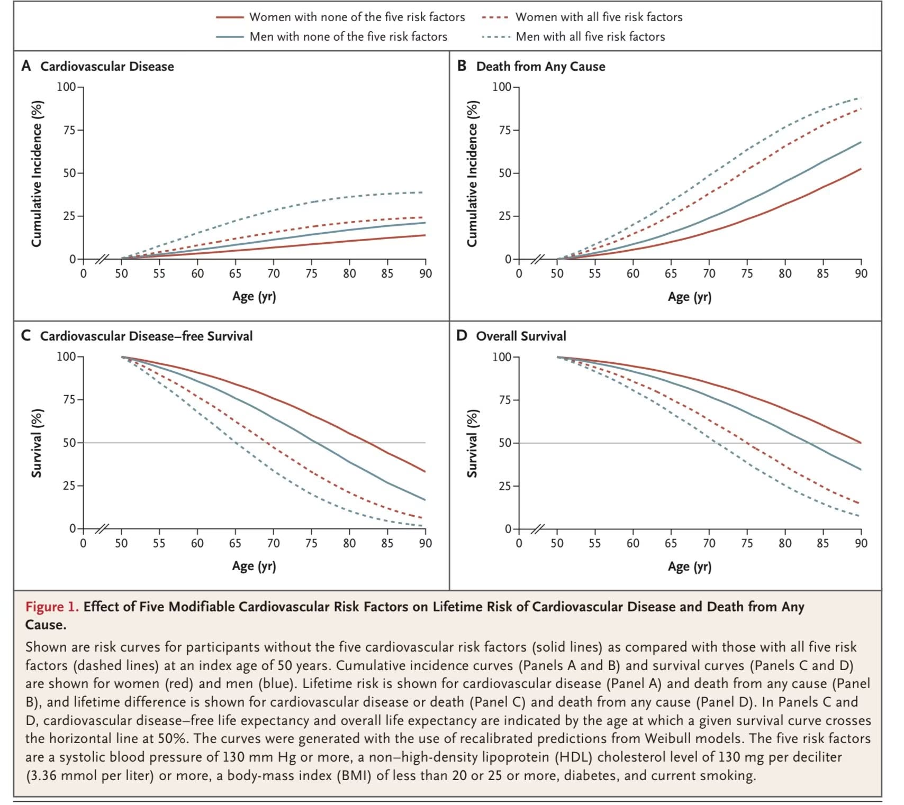

What is the Longevity Dividend?
afar.orgWhat is the longevity dividendafar.org“If we can target the biology of aging, we can delay age-related disease. This can save health care costs and add life to our years: we call this the Longevity Dividend.”
Louis shares the American Federation for Aging Research's concept that delaying aging biology can delay age-related disease, lowering health care costs and adding healthy years.
What is the Longevity Dividend?
afar.orgWhat is the longevity dividendafar.org“If we can target the biology of aging, we can delay age-related disease. This can save health care costs and add life to our years: we call this the Longevity Dividend.”
What is the Longevity Dividend?
This #NationalEconomicEducationMonth, we’re spotlighting the Longevity Dividend – an opportunity to live healthier for longer.
If we can target the biology of aging, we can delay age-related disease. That means lower health care costs and more years of life.
Breakthroughs in science and medicine are helping more people live longer than ever before. Now we have the chance to extend healthspan so that we can keep doing the things we love as we age.
And the impact goes beyond individuals. Research shows that delayed aging could bring $7.1 trillion in economic value over 50 years. That’s a powerful return for public health and society.
Learn more and explore expert resources on the #LongevityDividend here: What is the longevity dividend (afar.org)
#Healthspan #PublicHealth #Longevity
Summarizes the case for the supplement AKG, which extended lifespan in worms by about 50% and healthspan in aged mice, apparently by mildly suppressing mitochondrial function and mimicking calorie restriction. The linked EBioMedicine paper suggests AKG inhibits thrombosis and inflammation. The human evidence for cardiovascular benefit is limited and the author notes he personally uses it.

Louis cites a Science Immunology paper (Khan et al. 2026) showing that with aging B cells become insulin-responsive and drive chronic T cell overstimulation. He argues avoiding insulin resistance and high insulin is key to lowering risk for age-related diseases like CVD. Mouse data.

Luigi Fontana's summary of a NEJM pooled analysis of over 2 million people in 39 countries on blood pressure, non-HDL cholesterol, BMI, diabetes and smoking. At age 50, no risk factors versus all five meant up to 13.3 more CVD-free years and lower lifetime CVD risk; modifying risk factors at 55-60 still helped. Only about half of CVD events are attributable to the five classic factors.
Mice switched at 52 weeks to a folate- and choline-free diet held their weight, avoided anemia, and showed reduced protein synthesis pathways over 68 weeks. Gokhan stresses the work is in yeast, worms and mice, not humans.
Louis shares Gokhan Can's summary of bempedoic acid in 4,206 statin-intolerant primary prevention patients: the primary composite fell 30%, MI 39%, and all-cause mortality 27%. It lowers LDL by 21.3% and hsCRP by 21.5%, and inhibits ACLY, which drives senescence inflammation in aged mice.
Summarizes studies on spermidine, an autophagy-inducing polyamine: higher dietary intake is associated with lower all-cause mortality and cognitive decline in humans, and it extends lifespan in animal models. Natto, wheat germ, mushrooms, soy products and aged cheese are rich sources, and supplementation appears well tolerated in older adults.